9. Viaje por Castilla la Vieja
9. Viaje por Castilla la Vieja
8 de abril al 14 de abril 2022
Día 5, de Valladolid a Palencia
12 de abril


171. Castromonte
171. Castromonte
Empezaría visitando el pueblo de Castromonte, que tiene una iglesia de valor y una gran plaza Mayor. Había sido recientemente restaurada y aún quedaban partes de la plaza.
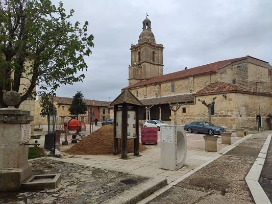


172. Rueda
172. Rueda
Después me acercaría al primer pueblo importante,
Rueda. Esta localidad es conocida por su tradición vinícola. En ella hay muchas de las principales bodegas que produce vino con denominación de origen de Rueda, equiparable en importancia al Ribera de Duero.
El edificio más destacable del pueblo es la iglesia de Nuestra Señora de La Asunción. Esta iglesia tiene una estructura diferente a la de cualquier iglesia ya que parece más un palacio fortaleza que una iglesia. Tiene dos torres que acaban en pináculos y una portada barroca más propia de un palacio que de una iglesia. Por dentro destaca por la amplitud de la nave, con varios retablos barrocos de gran valor. Las paredes están pintadas y escayoladas de blanco y se nota como las torres han sido añadidos de la antigua iglesia mudéjar. En la misma calle se encuentran edificios palaciegos hasta llegar a otro de los edificios importantes como es la ermita del Cristo de las Batallas, de planta hexagonal.
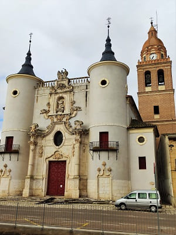

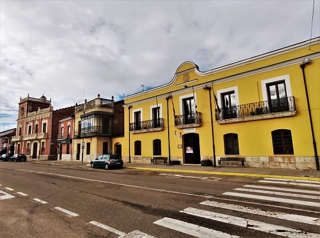


173. Coca
173. Coca
Después pasaré a realizar la ruta de los castillos, en la que cambiaremos de provincia, pasando a Segovia. El siguiente pueblo será
Coca con un diseño único dentro de los castillos españoles.
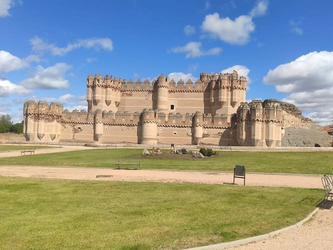
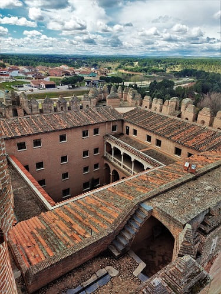
Es de estilo mudéjar y ha sido modificado con los años. Hoy existe una escuela de FP en su interior y se hacen visitas guiadas donde pude pasear por las murallas exteriores así como entrar en el interior de las torres. Existen imágenes de fotos y grabados de los últimos tiempos así como su patio palaciego completamente hecho desde cero. Esta zona estaba muy dañada antes de la restauración.
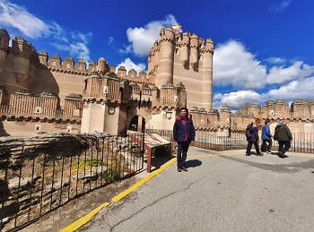
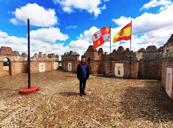
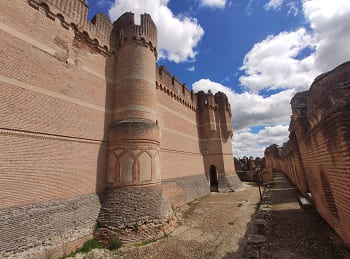
Otros monumentos visitables es
la muralla, que esta siendo restaurada, la Puerta de la villa y el ayuntamiento y la plaza mayor de la villa. Esta plaza esta referenciada a Teodosio, uno de los emperadores romanos hispanos. Nacido en esta ciudad, llamada Cauca en su origen romano.
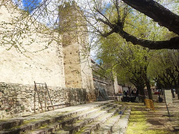
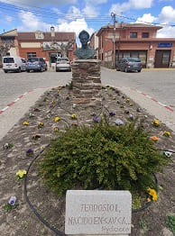
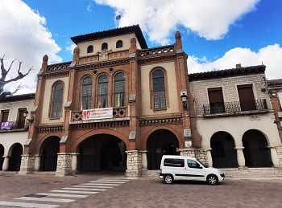
La iglesia de la villa, la de santa María la Mayor se encuentra en la plaza Mayor. Además aún quedan vestigios de la torre de una iglesia antigua, y la torre de san Nicolas, una de las más altas de la región.
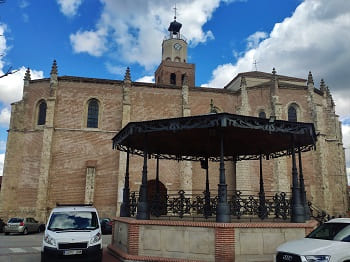
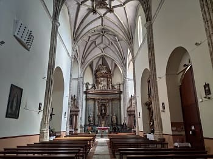
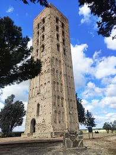
Después de Coca iría a visitar
Iscar.

174. Iscar
174. Iscar
Iscar es un pueblo bastante grande pero que no destaca especialmente en patrimonio, pero tiene un castillo. El castillo ha sido restaurado pero se encuentra alejado del centro en lo alto de un cerro. Tiene un par de iglesias destacadas, la principal,
la iglesia de santa María de los Martires y la iglesia de san Miguel, de estilo románico que solo mantiene en el exterior.
El castillo de Iscar se ve desde el pueblo y ha sido objeto de varias restauraciones. Este castillo es de después de la reconquista, que se hizo aprovechando anteriores atayalas árabes para defender el territorio. Actualmente se celebran diferentes actividades y existe una cervecería artesanal en su interior. En las imagenes, el ayuntamiento, la iglesia de Santa María y el castillo.
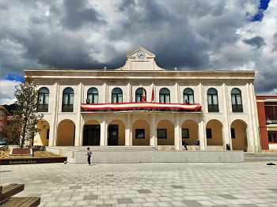
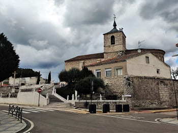
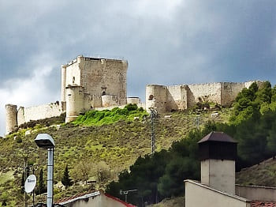
Después seguiría por tierras segovianas para ir a uno de los pueblos más importantes y con más historia de la provincia.


175. Cuéllar
175. Cuéllar
Al igual que los dos pueblos anteriores posee un castillo. Este castillo es de una importancia superior tanto patrimonialmente como históricamente. Este pueblo es
Cuellar y no solo tiene el castillo como el caso de Coca, sino que contiene un conjunto arquitectónico único en el entramado de sus calles en el centro histórico y su arquitectura religiosa. Además se conserva muy bien la muralla y diferentes puertas y arcos de la muralla en el interior del pueblo.
La entrada al castillo no es muy cara y es guiada. Esta visita se realiza en forma de obra teatral en la que hay una historia con diferentes personajes caracterizados que van contando una historia que sucedió en el castillo. El castillo fue propiedad de los duques de Albuquerque. En el último siglo, los herederos cedieron parte del inmueble al estado para realizar una cara restauración y salvarlo de la ruina, a cambio ellos se quedaron con algunos sectores del castillo. Además sirve hoy en día de instituto de secundaria.
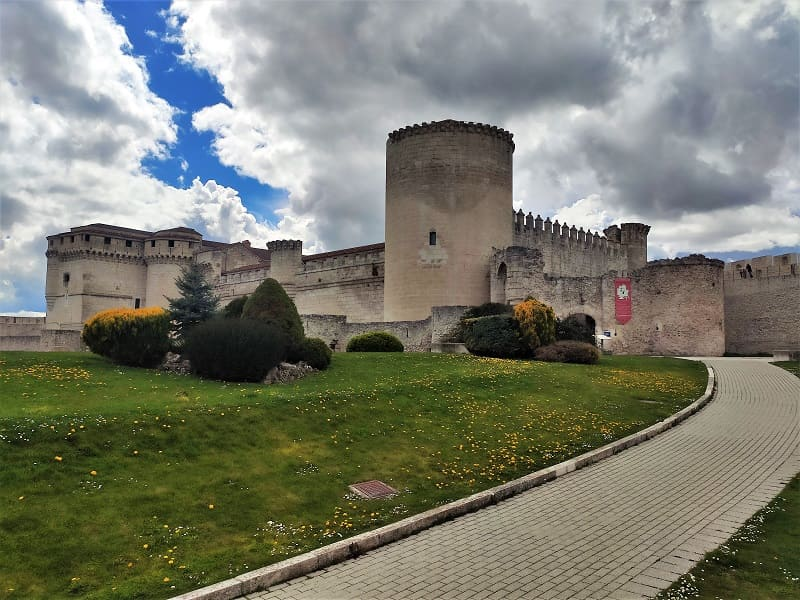
Cerca del castillo esta
la iglesia de san Martín, que se ve en la primera imagen, que actualmente es propiedad del ayuntamiento. Muy cerca esta el antiguo hospital de San Basilio que hoy en día es un restaurante y solo se conserva la fachada. Si seguimos alrededor del castillo podremos visitar
los restos de la iglesia de Santiago, de la cual se conserva principalmente el ábside,
la puerta de Santiago (una de las principales puertas de entrada a la ciudad) y la
muralla.
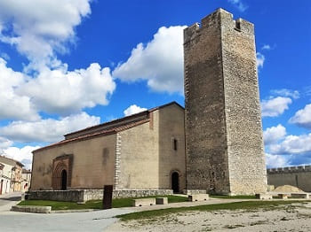
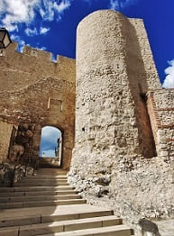
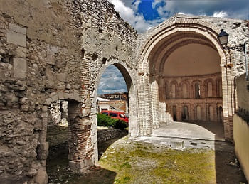
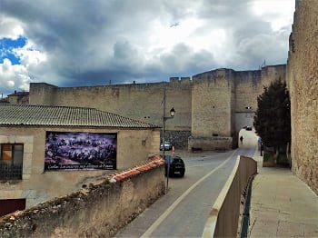
Cerca esta la
iglesia de san Esteban y la necrópolis de esta iglesia en la que han dejado las excavaciones a la vista con protección en algunos casos. La iglesia de san Esteban es la iglesia más importante y de más valor a mi modo de ver de Cuéllar. Esta iglesia contiene sepulcros de varios de los nobles que mandaron en la ciudad en la época medieval. Estos sepulcros están rematados con yesería árabes y estilo gótico mudéjar como el resto de la iglesia. Además de esta iglesia en Cuéllar esta San Andres, que es más grande y del mismo corte gótico mudéjar que vería al final de la visita.
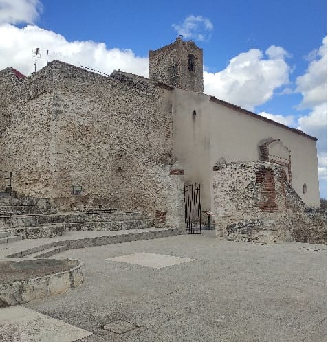
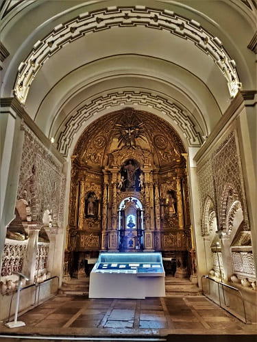
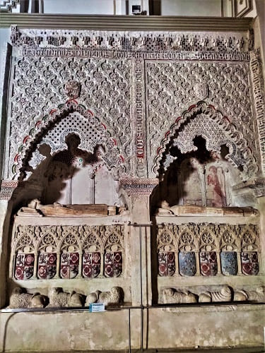
Bajando la cuesta me encontraría con el palacio de Don Pedro I que tiene uno de los artesonados mudéjares de más valor de Cuéllar. Y ya más abajo llegaría a la
Plaza Mayor, donde esta el ayuntamiento.
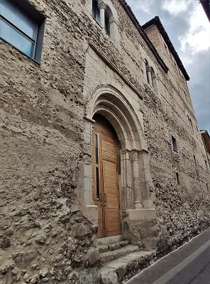
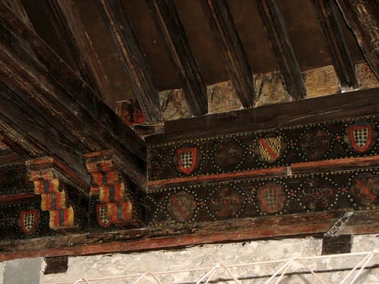
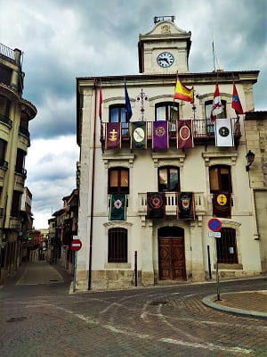
En la plaza también esta
la iglesia de san Miguel. Esta iglesia tiene un retablo barroco muy vistoso y de gran valor. El más bonito de la ciudad desde mi punto de vista. El ayuntamiento al ser semana santa estaba engalanado con las banderas de cada una de las cofradías que tiene la ciudad.

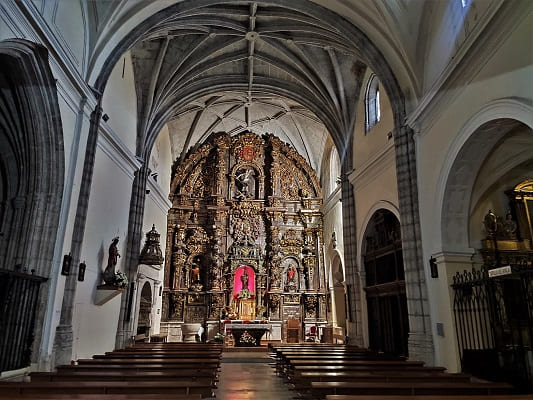
Cerca del ayuntamiento se encuentra
el convento de la Trinidad que esta ahora en manos privadas y en el que solo se puede ver la fachada del edificio. También me pararía en
los restos de la iglesia de Santa Marina y para completar la visita iría hacia
la iglesia de santa María de la Cuesta cuyo interior acababa de ser restaurado este año.
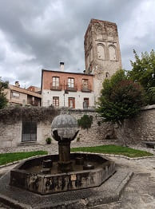
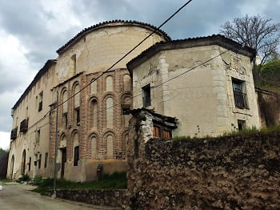
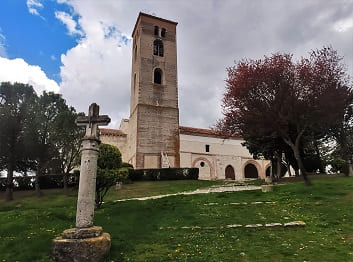
Muy cerca
la iglesia del Salvador con una torre mudéjar original y un ábside casi completo que debido a la cantidad de iglesias mudéjares pasa desapercibida. Otra de las iglesias importantes es
la iglesia de san Pedro, que es bastante grande y de estilo como la del Salvador. También en la última imagen se ve
la iglesia Hospital de santa Maria de la Magdalena.
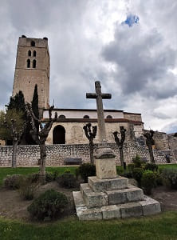
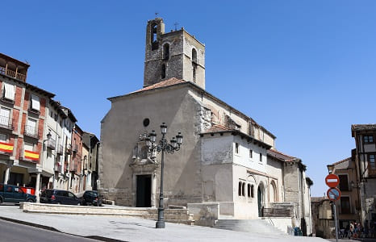
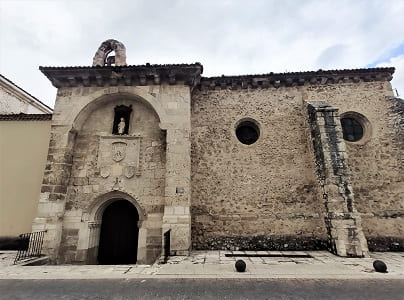
Por último la iglesia más importante y más grande de Cuéllar,
la iglesia de san Andrés que da nombre a una de las puertas de la ciudad,
el Arco de Cuéllar. Datada en el siglo XIII aunque de construcción anterior, fue levantada en mampostería de piedra y ladrillo, sobre una edificación de sillería anterior perteneciente al románico, del que conserva un zócalo en su fachada principal, así como la portada de la misma fachada y de la Puerta de San Andrés. Pese a las diversas modificaciones sufridas en el tiempo, actualmente conserva su traza original. En su interior destacan diversos frescos mudéjares, una puerta de cantería de inspiración musulmana y una amplia colección de escultura. También esta la virgen de la Rochela, trasladada desde el antiguo hospital de San Basilio antes citado, que es la más importante de todo Cuéllar al que atribuyen numerosos milagros.
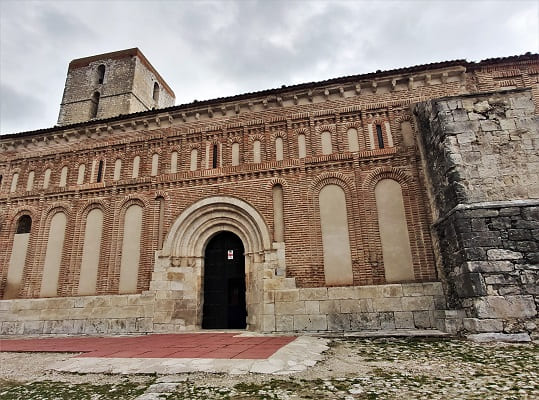
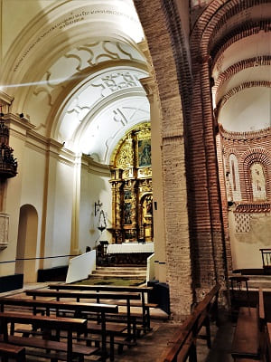
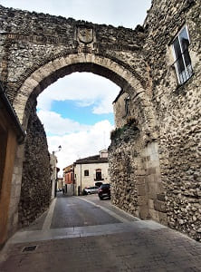
Por último fuera de la villa esta
el Santuario de la Virgen del Henar. Este santuario tiene una capilla engalanada con una cúpula llena de frescos religiosos y un retablo barroco bastante sobrio. La virgen a diferencia de la suerte de la Rochele sería robada por los franceses que la dañarían y le quitarían todos los detalles de plata.
Una vez visto Cuéllar y siguiendo la ruta de los castillos iría camino de
Peñafiel, al norte, uno de los pueblos más importantes de la provincia.


176. Peñafiel
176. Peñafiel

Este pueblo es conocido por su castillo en la cima de la montaña más próxima al pueblo.
Aparco lejos del río en
el convento de santa Clara. Tuve la suerte de poder entrar y ver la iglesia del convento. En ella había un minimuseo de los pasos de Semana Santa. La planta es circular y su cúpula es de estilo barroco con multitud de detalles. Merece mucho la pena entrar.
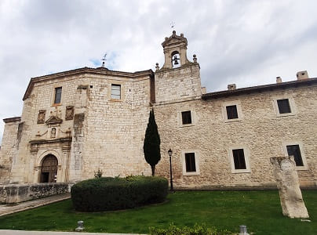
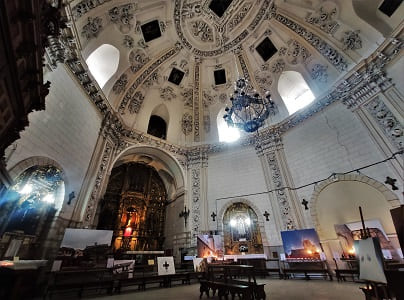
Una vez atravesado el río Duratón por
el puente medieval que lo cruza entramos en la plaza principal del pueblo con
la iglesia de Santa María de Mediavilla y el museo Sacro donde están algunos retablos o restos de iglesias de gran valor.
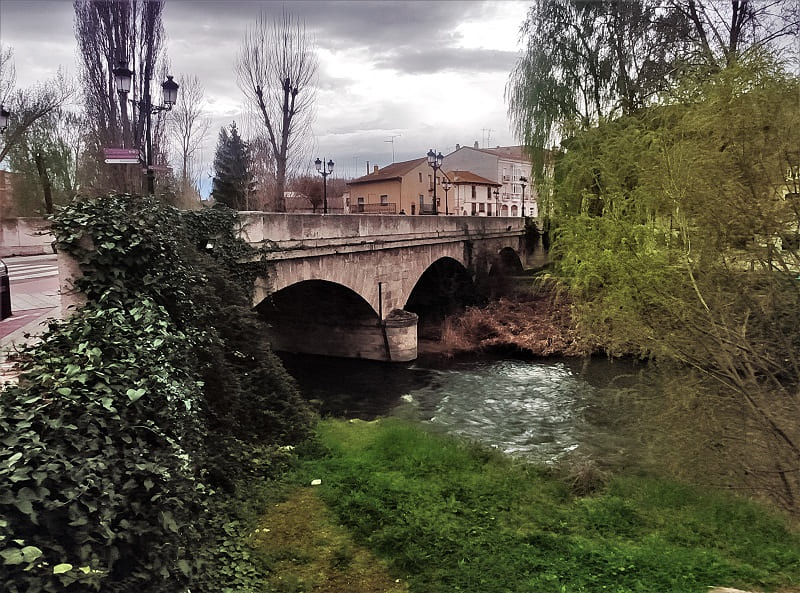
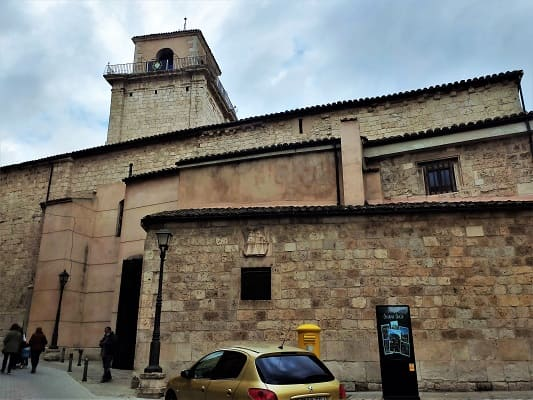
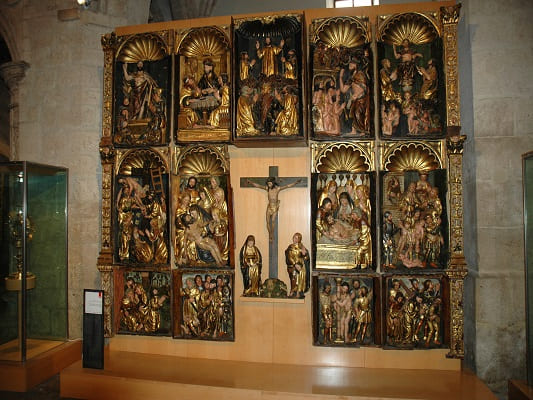
Tirando hacia la
iglesia de san Miguel podemos ver varias casas palaciegas, con diferentes detalles referentes a la ciudad en su fachada.
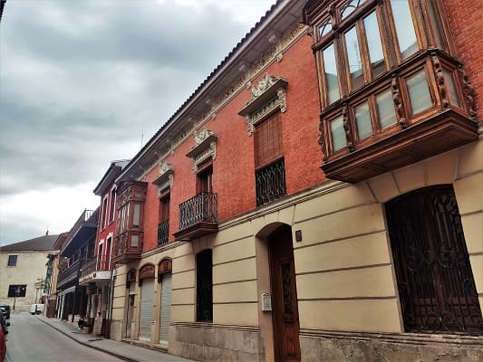
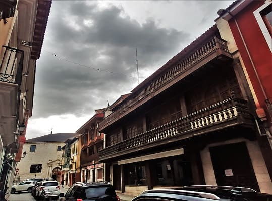
La iglesia de San Miguel es gótica y en su interior los retablos son de estilo barroco. Varios de ellos han sufrido una reciente restauración y existen diferentes paneles que te muestran el antes y el después. Es de estilo renacentista aunque guarda algunos elementos románicos de la antigua iglesia que sustituyo.
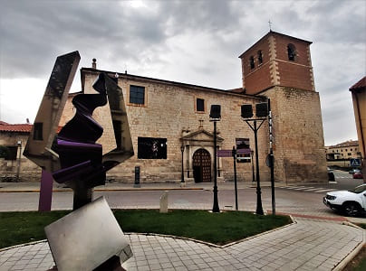
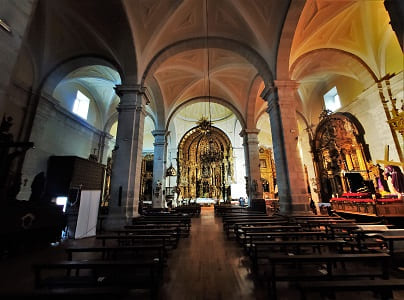
Cerca de esta iglesia esta
el convento de San Pablo, que es el edificio religioso más importante de la ciudad. Esta levantado sobre los restos históricos del Alcázar de Alfonso X. Data del siglo XIII. En el siglo XIV se convirtió en monasterio. Del alcázar queda el emplazamiento, una de las bases de un antiguo torreón que hoy sustenta la espadaña de piedra ejecutada en dos cuerpos y el patio de armas del mismo, que actualmente es el claustro del Convento.
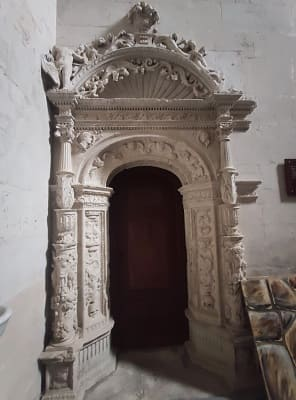
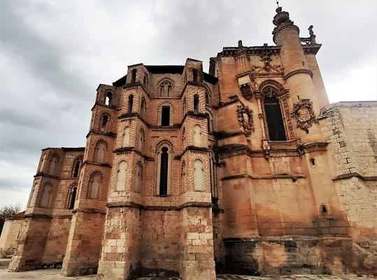
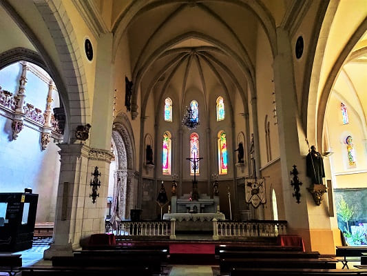
En el esta
la capilla del infante don Juan Manuel. Descendiente de la familia real española. En ella hay hasta 18 escudos de diferentes tamaños y todo tipo de detalles como pequeños ángeles que sostienen los escudos. Además en una vitrina están objetos de este caballero.
Después iría
al Coso de Peñafiel. Esta es la plaza donde se realizan todas las celebraciones de la ciudad y donde se encuentra el ayuntamiento. Llamado coso por la ausencia de baldosas o asfalto en el ya que se utiliza también para celebrar corridas o espectáculos taurinos.


177. Pesquera de Duero
177. Pesquera de Duero
Pondría rumbo a Palencia donde se encontraba la casa rural donde dormiría. Pasando por
Pesquera de Duero con una bonita plaza Mayor y un arco de acceso al pueblo.

178. Encinas de Esgueva
178. Encinas de Esgueva
También por
Encinas de Esgueva, pueblo con un castillo de los Aguilar, construido a finales del siglo XIV, donde viviría en algún momento Enrique III en la época en la que Burgos era la capital del reino de Castilla. También cuenta con
la iglesia de san Mames, que tiene un retablo barroco de gran valor.


179. Baltanás
179. Baltanás
Por último, pasaría por
Baltanás, localidad reconocida por albergar el museo de Cerrato Castellano donde se realizan diferentes exposiciones. En el se encuentra
el palacio Hospital de santo Tomás, símbolo del pueblo. Un palacio con una fachada barroca con dos grandes escudos y un patio muy suntuoso. Además cuenta con
la iglesia de san Millán de estilo gótico. Con una nave muy elaborada y la ermita de la virgen de Revilla. Esta ermita tiene como curiosidad que alberga las figuras del primer Belén que se conoce en la península Ibérica. Concretamente dos tallas pertenecientes a la Huida a Egipto por parte de San Jose, la Virgen y el niño Jesús. Fue recuperada de un robo el siglo pasado en la que se perdieron dos otras figuras y no se han encontrado. Si bien estuve no más de 1 hora, bien merece pasar una tarde entera para ver este bonito pueblo.
Muy cerca estaría mi destino, Quintana del Puente donde pasaría la noche.
Iglesia de la Inmaculada Concepción, s.XVI.
19
Iglesia de Nuestra Señora de la Asunción s.XVI
20
Castillo mudejar s.XV.
21
Castillo-Palacio s.XVI.
22
Castillo de los Duques de Albuquerque s.XIII, iglesias y plaza Mayor.
23
Castillo s.X y convento de San Pablo s.XIV.
24
Iglesia de San Juan Bautista, s.XVI.
251
Palacio-Hospital de Santo Tomas s.XVIII y Plaza Mayor.
26
Día 6, de Palencia a Segovia pasando por Burgos (CLICK para continuar)
13 de abril de 2022

![[Valid RSS]](https://www.onepointsync.com/wp-content/uploads/2016/08/valid-rss-rogers.png "Validate my RSS feed")